Abstract¶
Das vorliegende Experiment zeigt die Untersuchung eines DC-DC-Konverters mit dem TPS40200. Es wird das Verhalten der Ausgangsspannung bei verschiedener Belastung sowie verschiedener Eingangsspannung gezeigt. Weiterhin wird auf den Tastgrad des PWM-Signals eingegangen. Der Gleichstromsteller wird sowohl über Simulationen als auch im Labor untersucht. Es wird gezeigt, dass es Abweichungen zwischen Simulation und Messung geben kann. Außerdem werden die theoretischen Grundlagen des Experimients kurz dargestellt.
Einleitung¶
Um die Spannung über einem Verbraucher anzupassen, kann ein Spannungsteiler verwendet werden. Diese Methode erzielt jedoch einen schlechten Wirkungsgrad. Um einen möglichst energieeffizienten Wirkungsgrad zu erzielen, erfolgt die Spannungswandlung durch periodisch schaltende Wandler.
Der Begriff Gleichstromsteller ist auch als DC/DC - Wandler bekannt, da durch eine geschaltete Gleichspannung - je nach Bedarf - eine höhere, niedrigere oder sogar negative Gleichspannung entsteht. Im vorliegenden Experiment soll nun eine Parameterstudie eines DC-DC Wandlers vorgenommen werden.
Dafür wird das On-Board-Evaluationsmodul TPS40200 auf dem ASLK PRO Kit
untersucht. Es handelt sich hierbei um einen Abwärtswandler
(Step-Down-Converter). In der folgenden Schaltung wird dies durch eine
Pulsweitenmodulation (PWM) mit einer Frequenz von ca. 200 kHz
durchgeführt. Durch unterschiedliche Puls-Pausen-Verhältnisse lassen
sich verschiedene Ausgangsspannungen erzeugen. Die jeweilige Pulsweite
\(t_{on}\) und \(t_{off}\) beschreiben die Ein- bzw. Ausschaltzeit des
Abwärtswandlers (Voelker{.interpreted-text role=”cite”}, S.109).
Zu Beginn wird die Theorie eines klassischen Abwärtswandlers in Kapitel
KapitelIII{.interpreted-text role=”ref”} erläutert, um so die
Eigenschaften der einzelnen Bauteile und deren Abhängigkeit zueinander
zu verstehen. Des Weiteren werden die verwendeten Eigenschaften des
TPS40200 in TPS-Eigenschaften{.interpreted-text role=”ref”}
beschrieben. Daraufhin folgt die theoretische Simulation des
Schaltungsaufbaus unter den selben Konfigurationen, wie unter
Laborbedingungen, wie im Kapitel KapitelIV{.interpreted-text
role=”ref”} beschrieben. Im Labor wird der DC-DC Wandler bei folgenden
Konfigurationen untersucht:
bei konstanter ohmscher Last: Messen verschiedener Spannungen
bei konstanter ohmscher Last und variierender Eingangsspannung: Untersuchung der Spannungsstabilität am Ausgang
bei variierender ohmscher Last und fester Eingangsspannung: Messen des Ausgangsstroms
bei variierender Eingangsspannung: Beobachtung des Tastgrads der PWM-Wellenform
Die resultierenden Ergebnisse der Messungen im Labor werden im Kapitel
KapitelV{.interpreted-text role=”ref”} dargelegt. Darauf aufbauend
werden in KapitelVI{.interpreted-text role=”ref”} die messtechnisch
ermittelten Ergebnisse mit den Simulationsdaten diskutiert.
Abweichend der üblicherweise im deutschen verwendeten Angabe des Formelzeichens U der physikalischen Größe der elektrischen Spannung wird in Experiment 12 diese mit dem Formelzeichen V angegeben. Hierfür wurde sich entschieden, um Verwechslungen zwischen den im Text angegebenen Quellen und diesem Dokument zu vermeiden.
Theoretische Vorbetrachtung {#KapitelIII}¶
Das Evaluierungsmodul (EVM) mit dem nicht synchronen Abwärtswandler
TPS40200 ist auf dem
ASLK PRO zu finden,
Schaltnetzteil basierend auf dem TPS40200{.interpreted-text
role=”numref”} zeigt den Schaltplan des EVM.
Ein nicht synchroner Abwärts- oder auch Aufwärtswandler wird dadurch charakterisiert, dass eine Freilaufdiode den weiteren Stromfluss bei nicht aktivem Schaltsignal (\(t_{off}\) des Duty Cycles) gewährleistet. Ein synchroner Wandler hätte hingegen einen zusätzlichen MOSFET anstatt der genannten Diode, welcher durch ein PWM-Signal gesteuert wird. Der Vorteil eines solchen Wandlers ist der bessere Wirkungsgrad.
Die Kenndaten des
TPS40200 erlauben eine
maximale Eingangsspannung von bis zu 52 V und eine maximale
Ausgangsspannung von \(V_{in} - 10V\) bis \(V_{in}\). Diese variieren
ebenfalls mit dem für die Ausgangsspannung gewählten Schaltungsentwurf.
Da der hier beschriebene Versuch sich auf den bereits fertigen
Schaltungsentwurf des ASLK PRO-Boards bezieht, werden im Folgenden nur
die verwendeten Spezifikationen erläutert. Der verwendete Abwärtswandler
(Buck-Konverter) hat ebenfalls Funktionen, die im Datenblatt
(TEX1{.interpreted-text role=”cite”}, S.11ff) beschrieben sind,
allerdings wurden diese nicht im fertigen Layout mit aufgeführt und sind
somit nicht relevant für die zu betrachtende Schaltung.
Das hier verwendete EVM wird mit einer Eingangsspannung von 6 V bis 15 V betrieben. Die konstante Ausgangsspannung kann mit Hilfe des Jumpers JP8 zwischen 3,3 V oder 5 V eingestellt werden. In beiden Fällen beträgt der Ausgangsstrom minimal 125 mA und maximal 2,5 A.
Grundaufbau des Abwärtswandlers¶
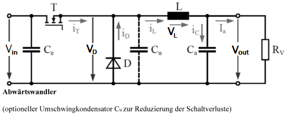{#BasicDCDC .align-center}
In BasicDCDC{.interpreted-text role=”numref”} ist der grundlegende
Aufbau eines Abwärtswandlers gezeigt. Aus der Schaltung wird schnell
klar, dass die Ausgangsspannung eines Abwärtswandlers immer im Bereich
von 0 V bis \(V_{in}\) liegt. Die Spule ist eines der wichtigsten
Elemente in diesem Schaltungsaufbau, denn durch sie wird zugeführte
Energie gespeichert, wenn der MOSFET leitet und die gespeicherte Energie
wird abgegeben, wenn der MOSFET sperrt. Hinzu kommt, dass sie einem
schnellen Stromanstieg durch ihre Eigeninduktion entgegenwirkt, denn der
Spulenstrom folgt dem Induktionsgesetz und schützt so die Last vor hohen
Stromspitzen. Die Induktivität der Speicherdrossel wird in den meisten
Fällen so gewählt, dass der geplante minimale Ausgangsstrom nicht
unterschritten wird. Ebenfalls ist bei der Induktivitätswahl darauf zu
achten, dass der magnetische Sättigungsstrom der Spule nicht
überschritten wird, da je nach Spulentyp mit Erreichen der magnetischen
Sättigung der Induktivitätswert abnimmt. Dies würde sich negativ auf
unsere abgebende Energie der Spule auswirken, wie die
12_eq_energiespule{.interpreted-text role=”eq”} bestätigt
JoachimHerzStiftung.11.06.2020{.interpreted-text role=”cite”}. Ein
weiterer sehr wichtiger Faktor der zu wählenden Spule ist der parasitäre
Serienwiderstand (ESR), da die Verlustleistung der Spule minimal zu
halten ist, um mit einem optimierten Wirkungsgrad zu arbeiten
(Tietze.2002{.interpreted-text role=”cite”}, S.947).
Die benötigte Induktivität lässt sich deshalb wie folgt ermitteln:
\(I_{out,min}\) beschreibt hier den minimalen \(I_{SpitzeSpitze}\)
Rippelstrom, welcher das Zweifache des angegebenen minimalen Stormes
beträgt (Tietze.2002{.interpreted-text role=”cite”}, S.947):
Des Weiteren ist der Glättungskondensator ebenfalls essentiell, um die
Welligkeit der Ausgangsspannung einzustellen. Um die parasitären
Serienwiderstände des Kondensators gering zu halten, schaltet man meist
einen oder mehrere Elektrolytkondensatoren und keramische Kondensatoren
parallel. Dies hat zur Folge, dass die Verlustleistung der
Parallelschaltung der Kondensatoren verringert wird. Die benötigte
Kapazität errechnet sich nach 12_eq_cap{.interpreted-text role=”eq”},
wobei \(\Delta U_{out}\) die maximal auftretende Ausgangsrippelspannung
beschreibt (Tietze.2002{.interpreted-text role=”cite”}, S.947).
Texas Instruments hat für dieses Layout die Ausgangskapazität anders
ermittelt und gibt diese laut dem Datenblatt (TEX1{.interpreted-text
role=”cite”}, S.23) mit einer Kapazität von 165 \(\mu F\) an. Dies wird
nicht ganz schlüssig bei einem Blick auf den Schaltplan
Schaltnetzteil basierend auf dem TPS40200{.interpreted-text
role=”numref”}. An dem Schaltplan wird sichtbar, dass hier durch mehrere
parallel geschaltete Kapazitäten die parasitären Widerstände gering
gehalten werden.
Die Diode des Abwärtswandlers sorgt dafür, dass die gespeicherte Energie aus der Spule abgegeben werden kann, wenn der MOSFET nicht mehr leitet. Die Diode sollte mindestens eine Durchbruchspannung von \(2 V_{in}\) besitzen. Zu beachten ist, dass der maximale Ausgangsstrom und die Schwellspannung der Diode nicht zu groß sein sollten, denn wenn der MOSFET sperrt, setzt sich die Ausgangsspannung wie folgt zusammen:
Ein weiterer wichtiger Punkt ist die Schaltfrequenz des MOSFETs. Sollte diese zu klein gewählt sein, so entsteht der so genannte “lückende Strombetrieb”. Dieser ist stets zu vermeiden. Deshalb befindet sich die übliche Schaltfrequenz zwischen 20 kHz bis 200 kHz, um den gewollten “nicht lückenden Strombetrieb” zu erhalten.
Durch die genannten Bauteile und ihre Eigenschaften wird das Grundprinzip des Abwärtswandlers klar: Denn durch Schalten des MOSFETs, welcher durch ein PWM-Signal angesteuert wird, ist die Ausgangsspannung ein Produkt aus dem Tastverhältnis des PWM-Signals und der angelegten Eingangsspannung. Das Tastverhältnis beschreibt das Verhältnis der Einschaltzeit zu der Periodendauer des PWM-Signals:
Somit lässt sich erkennen, dass sich die Ausgangsspannung aus dem
arithmetischen Mittelwert der Eingangsspannung ergibt
(Tietze.2002{.interpreted-text role=”cite”}, S.944). Anmerken lässt
sich hier, dass die Ausgangsspannung bei einer festen Last als konstant
angenommen werden kann. So betrachten wir die Eingangsspannung als
variabel. Umgestellt zum Tastgrad ergibt sich eine Gleichung der Form
\(f(x)=a/x\). Dies lässt auf einen hyperbelförmigen Verlauf des Tastgrades
schließen.
Eigenschaften des TPS40200 {#TPS-Eigenschaften}¶
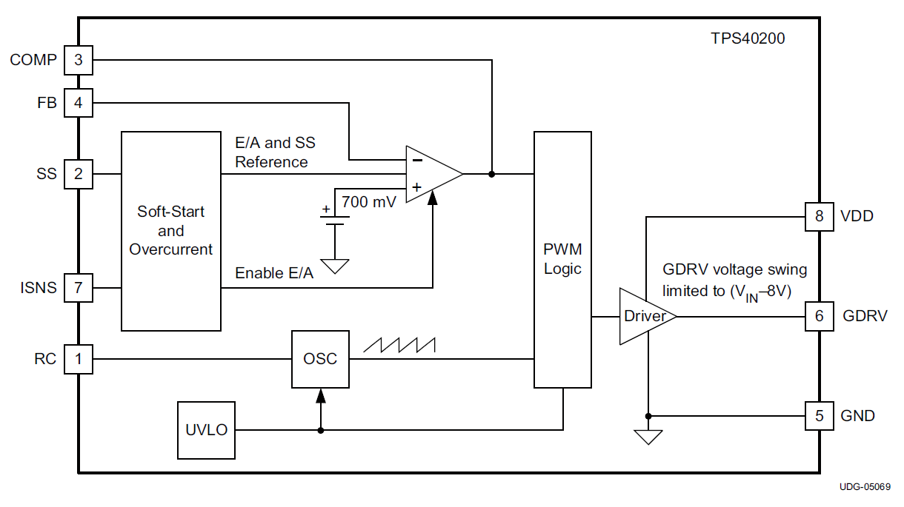{#Block_TPS40200 .align-center}
In Block_TPS40200{.interpreted-text role=”numref”} ist der
grundlegende Aufbau der Halbleiterschaltung schematisch dargestellt.
Dieser wird im Folgenden erläutert.
Es ist zu sehen, dass der Baustein auch über eine Soft-Start-Funktion verfügt, bei der der Ausgang einer langsam ansteigenden Soft-Start-Spannung folgt, sodass ein Überschwingen der Ausgangsspannung verhindert wird.
Die Anrampung der Ausgangsspannung kann, wie
Softstart_TPS40200{.interpreted-text role=”numref”} zeigt, durch
entsprechende Wahl des Kondensators \(C_{SS}\) eingestellt werden. Da die
Zeitkonstante der jeweiligen Kapazität varriert, können verschiedene
Anrampungen ermöglicht werden. Die Anlaufzeit ergibt sich aus folgender
Formel TEX1{.interpreted-text role=”cite”} :
\(t_{SS}\) ist die erforderliche Softstartzeit in Sekunden
\(C_{SS}\) ist der Wert des Softstart-Kondensators in F
\(R_{c}\) ist der interne Sanftanlauf-Ladewiderstand (105 \(k \Omega\) nominal)
\(V_{SST}\) ist die eine interne Spannungsversorgung bis zu einem Maximum von 8 V
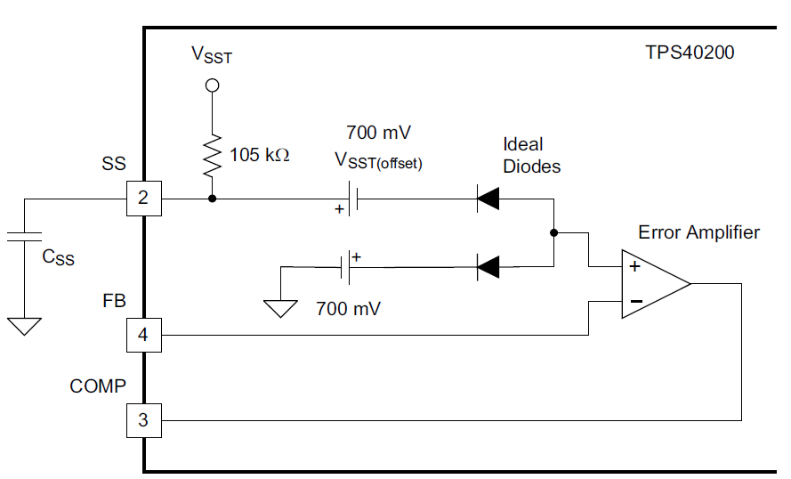{#Softstart_TPS40200 .align-center}
Eine weitere Eigenschaft ist die maximale Strombegrenzung durch die das
PWM-Signal ausgeschaltet wird, um sich und die Platine vor Zerstörung zu
schützen (Strombegrenzung_TPS40200{.interpreted-text role=”numref”}).
Wenn der FET eingeschaltet ist und über \(R_{ILIM}\) ein Abfall von
\(V_{ILIM} = 100 mV\) oder mehr vom VDD-Pin zum ISNS-Pin festgestellt
wird, wird ein Überstromzustand erklärt. In diesem Fall wird der FET
abgeschaltet und ein intern integrierter Softstart-Kondensator wird
entladen. Wenn der Softstart-Kondensator einen Pegel unter 150 mV
erreicht, löscht ein Komparator das Überstrom-Zustandsflag und versucht
neu zu starten. Sollte der Überstrom immer noch aktiv sein, so beginnt
der Vorgang erneut. Der maximale Spitzenstrom lässt sich über
berechnen (TEX1{.interpreted-text role=”cite”}, S.15). Der Widerstand
\(R_{F2}\) ist für den hier vorgestellten DC-DC-Wandler als unendlich
anzunehmen, wodurch die Strombegrenzung alleine von \(V_{ILIM}\) und
\(R_{ILIM}\) abhängt. So kann bei den hier verwendeten Parametern ein
Spitzenstrom von 3,33 A in der Spule fließen. Von diesem sollte beim
Design eine Toleranz von 25 % sowie der Rippelstrom von 0,125 A
berücksichtigt werden(TEX1{.interpreted-text role=”cite”}, S.24). Für
die hier verwendeten Parameter kann somit maximal ein Strom von 2,54 A
fließen.
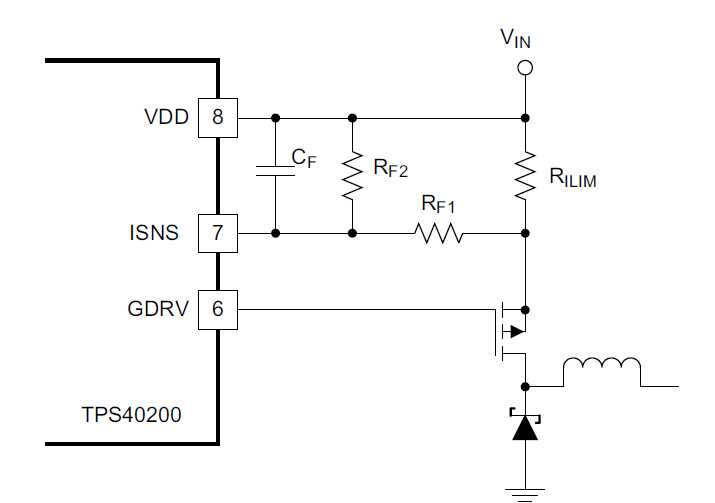{#Strombegrenzung_TPS40200 .align-center}
Die Ausgangsspannung verringert sich bei steigendem Laststrom. Dies ist
auf die damit verbundenen ansteigenden Verlustleistungen von den
parasitären Widerständen und die PN-Übergänge der Bauelemente
zurückzuführen (Instruments.1999{.interpreted-text role=”cite”} S. 10)
(TEX2{.interpreted-text role=”cite”} S. 12).
Es gibt noch weitere relevante Einstellungen, die auf dem EVM-Board
bereits realisiert worden sind, wie z.B. die Realisierung \(V_{CC}\)
Spannungsunterschreitung. Hierfür wird auf das Datenblatt des TPS40200
verwiesen (TEX1{.interpreted-text role=”cite”} S.12).
Die Betriebsfrequenz des Abwärtswandlers wird durch einen externen
Widerstand \(R_{201}\) bestimmt, der vom RC-Pin an VDD angeschlossen ist
sowie durch einen Kondensator \(C_{213}\), der vom RC-Pin an Masse
angeschlossen ist (siehe
Schaltnetzteil basierend auf dem TPS40200{.interpreted-text
role=”numref”}). Diese Verbindung und die beiden Oszillatorkomparatoren
im Inneren des Geräts bestimmen die Oszillatorfrequenz nach folgender
Gleichung:
Da der Abwärtswandler varrierende Lasten ermöglicht, erfordert die
Ausgangsspannung eine Regelung. In Block_TPS40200{.interpreted-text
role=”numref”} sieht man, dass der TPS40200 eine Referenzspannung von
700 mV für die Regelung der Rückkopplungsschleife benötigt. Diese
Angabe besitzt bereits eine Ungenauigkeit. So ist
(TEX1{.interpreted-text role=”cite”}, S.18) zu entnehmen, dass diese
bei 696 mV liegt.
Wie genau die Regelung funktioniert, wurde im Versuch 9: DC-DC
Konverter anschaulich beschrieben. Dazu wird ein
Spannungsteiler an die Ausgangsspannung angeschlossen und der mittlere
Abgriff wird auf den PIN “FB” gelegt. Eine Ausgangsspannung kann wie
folgt über den Rückkopplungsfaktor \(\beta\) eingestellt werden
(ASLKPro{.interpreted-text role=”cite”}, S.64):
Die Änderung der Ausgangsspannung kann über JP8 in
Schaltnetzteil basierend auf dem TPS40200{.interpreted-text
role=”numref”} erreicht werden. Bei Betrachtung wird auch erkenntlich,
dass die Ausgangsspannung zum Regeln der Ausgangsspannung verwendet
wird. Hierbei wird das Prinzip eines nichtinvertierenden Verstärkers
genutzt. Nach umstellen von 12_eq_01{.interpreted-text role=”eq”} zu
\(V_{out}\) kann dies folgendermaßen berechnet werden:
Der benötigte Parallelwiderstand zwischen \(R_{209}\) und \(R_{211}\) kann über
ermittelt werden.
Diesbezüglich kann durch einfaches Umformen der Parallelschaltung \(R_{211}\) errechnet werden:
Der Rückkopplungsfaktor \(\beta\) kann durch Änderung des Rückkopplungswiderstands \(R_{209}\) geändert werden, um so die Ausgangsspannung festzulegen. Es ist jedoch nicht möglich, auf dem ASLK PRO den Widerstand \(R_{209}\) zu ändern. Dies könnte jedoch durch den Anschluss eines externen Widerstandes zwischen der Klemme TP8 und Ground erreicht werden.
Der Ausgangsstrom darf zwischen 0,125 A und 2,5 A betragen
(TEX1{.interpreted-text role=”cite”}, S. 20, Tabelle 1). Über das
ohmsche Gesetz können wie folgt die Grenzwerte der ohmschen Last
ermittelt werden:
Somit wurden alle nötigen Parameter für den Schaltungsentwurf des Abwärtswandlers TPS40200 ermittelt.
Simulations- und Messaufbau {#KapitelIV}¶
Der Versuchsaufbau gliedert sich in zwei Abschnitte. Der erste Abschnitt behandelt die Simulation der Schaltung mit Hilfe des Programms TINA-TI und dazu nötigen Berechnungen. Der zweite Abschnitt beschäftigt sich mit dem Messaufbau vor Ort.
Die untersuchte Schaltung kann der
Schaltnetzteil basierend auf dem TPS40200{.interpreted-text
role=”numref”} entnommen werden. Insgesamt wurden vier Simulationen und
vier Messungen durchgeführt.
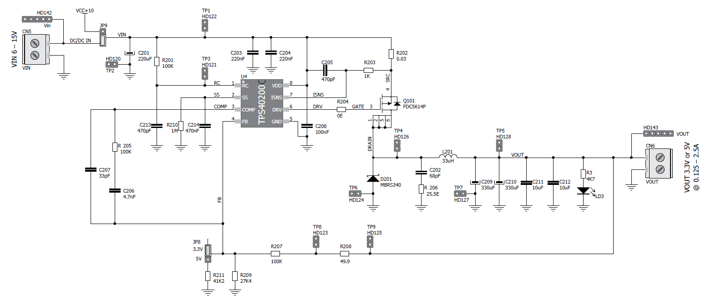{#Schaltnetzteil basierend auf dem TPS40200 .align-center}
A. Simulation¶
Größtenteils wurde für die Simulation TINA-TI in Version 9.3.200.277 SF-TI verwendet. Dabei sei angemerkt, dass mit diesem Spice Simulator zwar das grundlegende Verhalten der Schaltung simuliert wird. Jedoch werden dabei nicht die physikalischen Effekte des Layouts berücksichtigt. Neben den Standardbauteilen von TINA-TI wurde der TPS40200 und der FDC5614P neu eingebunden. Für den TPS40200 verwenden wir die Rev. D, die auf der Herstellerseite von Texas Instrument zum freien Download zur Verfügung steht. Für den FDC5614 wurde ein Spice-Modell vom Hersteller OnSemi umformatiert, sodass er in TINA-TI eingebunden werden kann. Die restlichen Bauteile wurden der Standardbibliothek von TINA-TI entnommen. Die Simulationsdateien können dem Repositorium entnommen werden.
Für die Berechnung des benötigten Widerstandes zum Festlegen der 5 V
Ausgangsspannung ergibt sich über 12_eq_R211209{.interpreted-text
role=”eq”} und 12_eq_R211{.interpreted-text role=”eq”} ein Widerstand
\(R_{211}\) von 40,1 \(k \Omega\). Die verfügbaren Widerstände auf dem
ASLK Pro lassen jedoch ausschließlich eine Beschaltung von 41,2
\(k \Omega\) zu.
Wellenformen¶
Es werden vier Spannungen der Schaltung simuliert:
Eingangsspannung, \(V_{in}\)
Ausgangsspannung, \(V_{out}\)
Oszillatorspannung, TP3
PWM-Signal, TP4
Dafür wird die Schaltung mit einem 20 \(\Omega\) – Widerstand belastet. Die Eingangsspannung wird auf konstante 10 V eingestellt. Um sicherzustellen, dass die Schaltung sich im eingeschwungenen Zustand befindet, wird nur der Zustand der Simulationszeit von 15 ms bis 15,1 ms dargestellt. Die Ergebnisse werden jeweils als Funktion \(u(t)\) dargestellt.
Ausgangsspannung bei fester Last {#my-reference-label-1}¶
Um das Verhalten der Ausgangsspannung während einer variierenden Eingangsspannung zu untersuchen, wird die Schaltung mit einer Last von 20 \(\Omega\) simuliert. Die Eingangsspannung wird als Dreiecksspannung mit einem Offset von 12,5 V, einer Amplitude von 2,5 V sowie einer Frequenz von 10 Hz erzeugt. So kann ein Spannungsbereich von 10 V bis 15 V betrachtet werden. Betrachtet wird der zeitliche Ausschnitt zwischen 75 ms und 125 ms, wodurch ein Sweep von 10 V bis 15 V erreicht wird. Dargestellt wird das Ergebnis durch \(V_{out}(V_{in})\).
Ausgangsspannung und -strom bei fester Eingangsspannung und dynamischer Last¶
Die Eingangsspannung beträgt in der Simulation konstant 10 V. Die Last ist variabel und wird mit Hilfe eines spannungsgesteuerten Widerstandes umgesetzt. Dieser wurde anhand vom diesem Beispiel erstellt. Die Last verändert ihren Widerstand linear zwischen 2 \(\Omega\) und 40 \(\Omega\). Dies wird mit Hilfe eines Dreieckssignals mit einer Frequenz von 5 Hz realisiert. Betrachtet wird das Simulationsergebnis von 150 ms bis 250 ms, um so genau einmal zu beobachten, wie sich der Widerstand von 2 \(\Omega\) auf 40 \(\Omega\) erhöht. Dargestellt wird das Ergebnis durch \(V_{out}(I_{out})\).
Tastgrad {#my-reference-label-2}¶
Der Tastgrad (eng. duty cycle) kann durch 12_eq_duty{.interpreted-text
role=”eq”} berechnet werden. Da die Ausgangsspannung über die
Widerstände \(R_{209}\) und \(R_{211}\) fest gewählt ist, kann angenommen
werden, dass die Ausgangsspannung konstant ist. Somit hat der Tastgrad
nur eine Abhängigkeit von der Eingangsspannung.
In der Simulation ist der Tastgrad durch die Spannung TP4 dargestellt.
Wie auch in Abschnitt my-reference-label-1{.interpreted-text
role=”ref”} wird ein Sweep der Eingangsspannung vorgenommen. Da die
Simulation von TP4 nicht genügend Stützstellen besitzt, kann anhand der
Simulationsdaten der Tastgrad ohne größere Abweichungen nicht
zuverlässig bestimmt werden. Aus diesem Grund wird der Tastgrad über die
Eingangs- und Ausgangsspannung nach 12_eq_duty{.interpreted-text
role=”eq”} bestimmt. Dieses Ergebnis wird durch \(V_{in}\) in Abhängigkeit
von dem Tastgrad dargestellt.
Messaufbau¶
Wie zuvor beschrieben, wird für die Versuche das ASLK (Analog System Lab
Kit) Pro der Firma MikroElektronika für den Messaufbau verwendet. Auf
diesem befindet sich die in
Schaltnetzteil basierend auf dem TPS40200{.interpreted-text
role=”numref”} genannte Schaltung. Betrieben wird das Board mit einer
symmetrischen Spannungsversorgung von 10 V. Als Messinstrument wird
ein 4-Kanal Oszilloskop verwendet. Auf dem ASLK wird der JP8 so
gesteckt, dass eine Ausgangsspannung von 5 V zu erwarten ist. Die
Darstellungsarten entsprechen in jedem Schritt der Darstellungsart in
der Simulation.
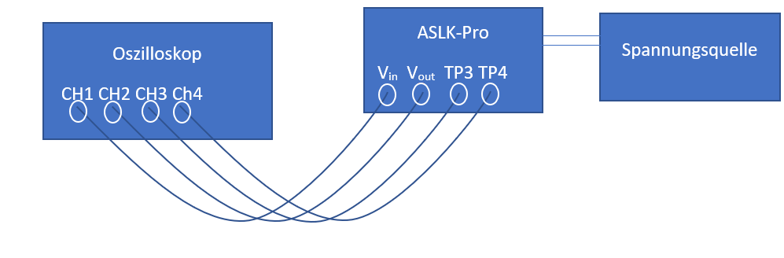{#Messaufbau der praktischen Messung .align-center}
Wellenformen¶
Der Jumper JP9 wird so gesteckt, dass die Schaltung mit konstant 10 V Eingangsspannung betrieben wird. Anschließend wurde mit dem 4-Kanal-Oszilloskop die Eingangs- und Ausgangsspannung sowie TP3 und TP4 gemessen. Die Messung erfolgt über einen Zeitraum von 100 \(\mu s\). Belastet wird die Schaltung wie in der Simulation mit 20 \(\Omega\).
Ausgangsspannung bei fester Last¶
Die Last bleibt unverändert. Der Jumper JP9 wird so gesteckt, dass die Schaltung extern über CN5 betrieben werden kann. Hier wurde ein Funktionsgenerator angeschlossen. Dieser erhöht die Spannung in 0,5 V Schritten von 10 V bis 15 V. Gemessen wird die Eingangs- und Ausgangsspannung. Für jeden 0,5 V Schritt werden jeweils 31250 Werte aufgezeichnet, woraus im Nachgang der Mittelwert gebildet wird.
Ausgangsspannung und -strom bei fester Eingangsspannung und dynamischer Last¶
Um die Ausgangsspannung und den Ausgangsstrom zu messen, werden wieder konstante 10 V eingespeist. An die Last wird in Reihe ein 1 \(\Omega\) Shunt-Widerstand sowie eine verstellbares Schiebepotentiometer angeschlossen. Gemessen wird die Spannung über die gesamte Last sowie über dem Shunt-Widerstand. Das Ohm’sche Gesetz \(U=R I\) macht deutlich, dass in diesem Fall die gemessene Spannung über dem Shunt-Widerstand dem Ausgangsstrom gleicht.
Tastgrad¶
Die Bestimmung des Tastgrades erfolgt wie zuvor in Abschnitt
my-reference-label-2{.interpreted-text role=”ref”} aus der gemessenen
Eingangs-und Ausgangsspannung. Grund für diese indirekte Bestimmung ist,
dass die im Oszilloskop integrierte Duty-Cycle-Funktion ungenau wird,
sobald die Flanken des Rechtecksignals keine lineare Steigung mehr
aufweisen, sondern Spannungsspitzen enthalten.
Ergebnisse {#KapitelV}¶
Im Folgenden werden die simulierten Werte mit den messtechnisch ermittelten Werten verglichen und dargestellt.
Simulierte und messtechnische Wellenformen¶
Die Wellenformen sind in TP3TP4VoutVin{.interpreted-text
role=”numref”} zu erkennen. Aus Darstellungsgründen wird die
Ausgangsspannung in zwei Plots aufgeteilt.
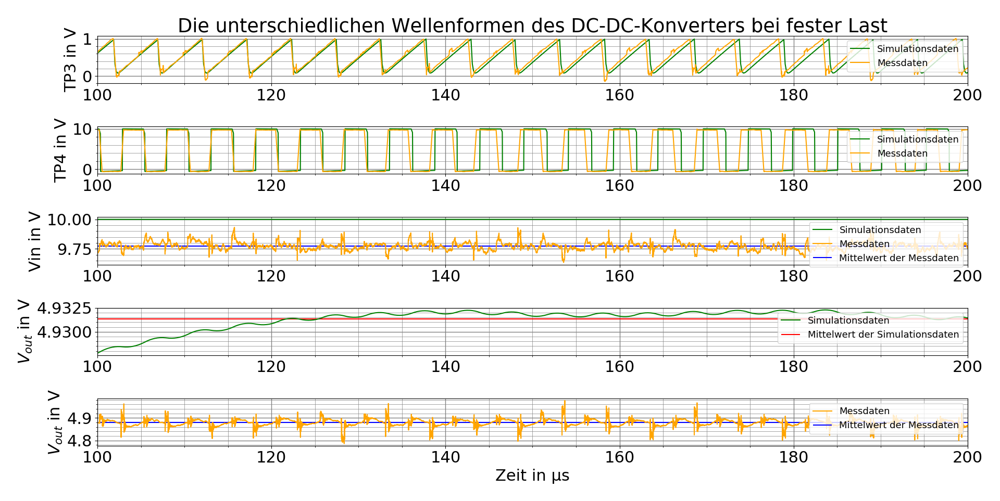{#TP3TP4VoutVin .align-center}
Grundlage für die folgenden Ausführungen zum TP3 und TP4 Plot sind folgende Frequenzen, die aus den jeweiligen Daten ermittelt wurden:
Daten bei 100 \(\mu s\) bei 200 \(\mu s\)
Simulation 197,03 kHz 194,79 kHz
Messdaten 200,08 kHz 196,42 kHz¶
: Frequenz von TP3 und TP4 über die Zeit
Im ersten und im zweiten Plot von TP3 und TP4 ist zu erkennen, dass sich die Frequenz der Simulationsdaten am Anfang des Plots, bei 100 \(\mu s\), von den der Messdaten nicht unterscheidet. Diese weisen jedoch am Ende des Plots, bei 200 \(\mu s\), eine Differenz zueinander von 1,63 kHz auf. Man kann augenscheinlich nicht erkennen, dass sich die Frequenz der Mess- wie auch der Simulationsdaten über die Zeit ändert. Bei den Simulationsdaten ergibt sich dabei über einen Zeitraum von 100 \(\mu s\) eine Differenz von 2,24 kHz. Bei den Messdaten hingegen ergeben sich über den gleichen Zeitraum 3,66 kHz.
Im dritten Plot von der Eingangsspannung \(V_{in}\) ist ersichtlich, dass die Simulation mit einer idealen glatten Gleichspannung von 10 V durchgeführt wurde. Hingegen ist bei den Messdaten zu erkennen, dass die Eingangsspannung \(V_{in}\) keine glatte Gleichspannung ist. Der Mittelwert dieser Spannung liegt bei 9,755 V. Daraus ergibt sich eine Differenz von 0,245 V zwischen dem Mittelwert und der Simulationsgleichspannung.
Im vierten Plot von \(V_{out}\) ist zu erkennen, dass die sich ergebende simulierte wellige Ausgangsspannung typisch der eines DC-DC Wandlers ist (vgl. DC-DC Konverter). Der Mittelwert dieser Spannung ergibt ca. 4,9315 V. Im letzten Plot von \(V_{out}\) sind die Messdaten zu sehen. Auffällig sind hier die Spannungsspitzen im typischen welligen Verlauf der Ausgangsspannung. Diese Spannungsspitzen befinden sich an der Stelle, an der sich in TP4 die Signalflanken befinden. Ansonsten ist der Mittelwert der Ausgangsspannung mit 4,88 V geringer als die simulierte, was eine Differenz von 51,5 mV ergibt.
Simulierte und messtechnische Ausgangsspannung bei fester Last¶
Bei einer festen Last von 20 \(\Omega\) wird die Eingangsspannung in
einem Bereich von 10 V bis 15 V dargestellt sowie die zugehörige
Ausgangsspannung. Die Ausgangsspannung variiert, weshalb zusätzlich der
Mittelwert ermittelt und dargestellt ist. Dies ist
fig:12vout{.interpreted-text role=”numref”} zu entnehmen.
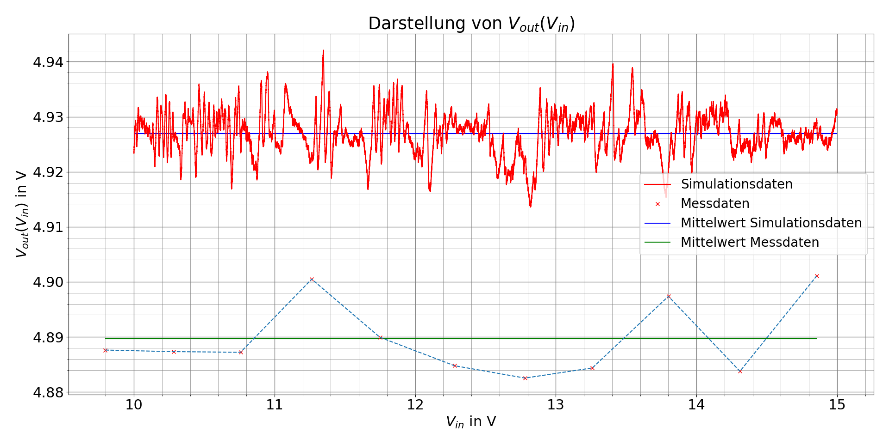{#fig:12vout .align-center}
Die simulierten und gemessenen Ausgangsspannungen sind beide bis auf ein Rauschen konstant. Die simulierte Ausgangsspannung liegt durchschnittlich bei ca. 4,926 V und die messtechnisch ermittelte bei ca. 4,89 V.
Simulierte/r und messtechnische/r Ausgangsspannung und -strom bei fester Eingangsspannung und dynamischer Last¶
fig:12IV{.interpreted-text role=”numref”} stellt die Messung
\(V_{out}(I_{out})\) dar.
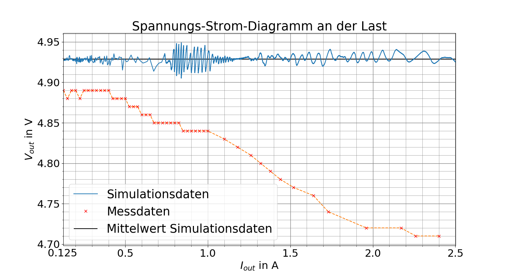{#fig:12IV .align-center}
Die simulierte Ausgangsspannung oszilliert um ca. 4,928 V. Es ist kein Spannungsabfall bei erhöhtem Strom zu erkennen. Die Schaltung kann laut Simulation über den gesamten Strombereich von 125 mA bis 2,5 A betrieben werden. Bei der Messung an der Schaltung hingegen fällt die Ausgangsspannung bei steigendem Strom ab, so dass sie anfangs bei 125 mA bei 4,89 V liegt und bei 2,4 A bei 4,71 V. Wird der Strom weiter erhöht, so bricht die Ausgangsspannung komplett ein. Die Spannung fällt nicht linear. Es ist zu beobachten, dass die Spannung schneller fällt, umso höher der Ausgangsstrom ist.
Simulierter und messtechnischer Tastgrad¶
Der aus Simulations- und Messwerten rechnerisch ermittelte Tastgrad ist
in fig:12dc{.interpreted-text role=”numref”} zu erkennen. Der Tastgrad
wurde durch 12_eq_duty{.interpreted-text role=”eq”} berechnet.
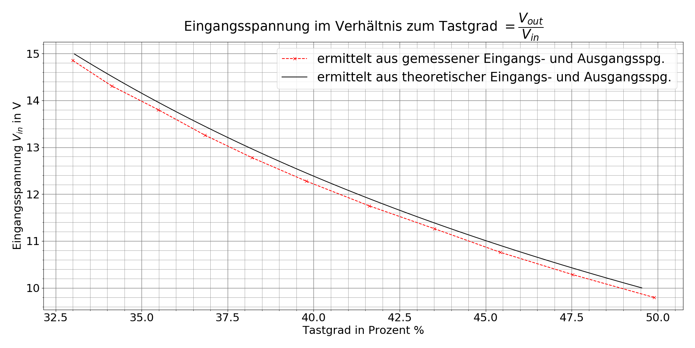{#fig:12dc .align-center}
Der Verlauf zwischen Messung und Simulation ist bis auf einen Versatz von ca. 150 mV gleich. Es ist zu erkennen, dass der Tastgrad bei fallender Eingangsspannung steigt. Die Graphen besitzen eine leichte Krümmung.
Die folgenden beiden Abbildungen zeigen die Messung mit dem Oszilloskop. In diesen ist zu erkennen, dass das Rechtecksignal vom duty cycle (blau) verformt ist. Aufgrund dieser Verformung konnte die Funktion im Oszilloskop den duty cycles nicht zuverlässig bestimmen.
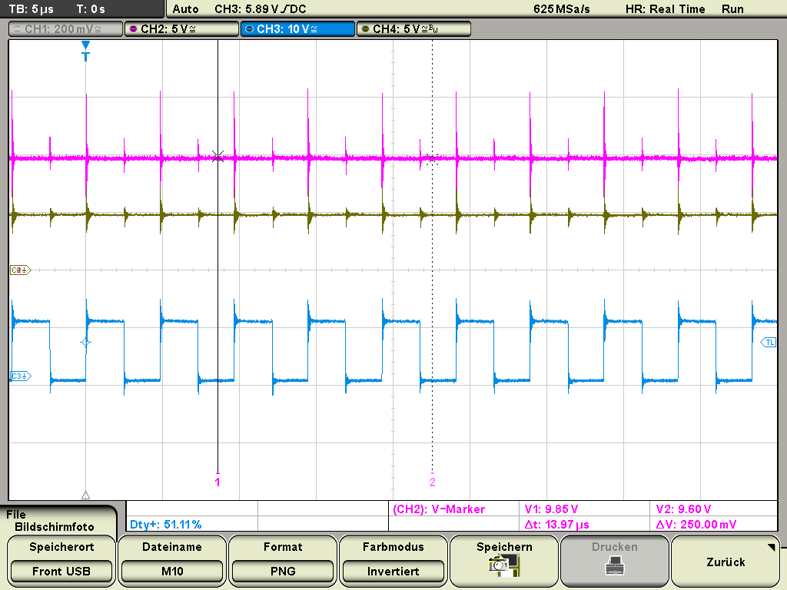{#fig:12dcM10 .align-center}
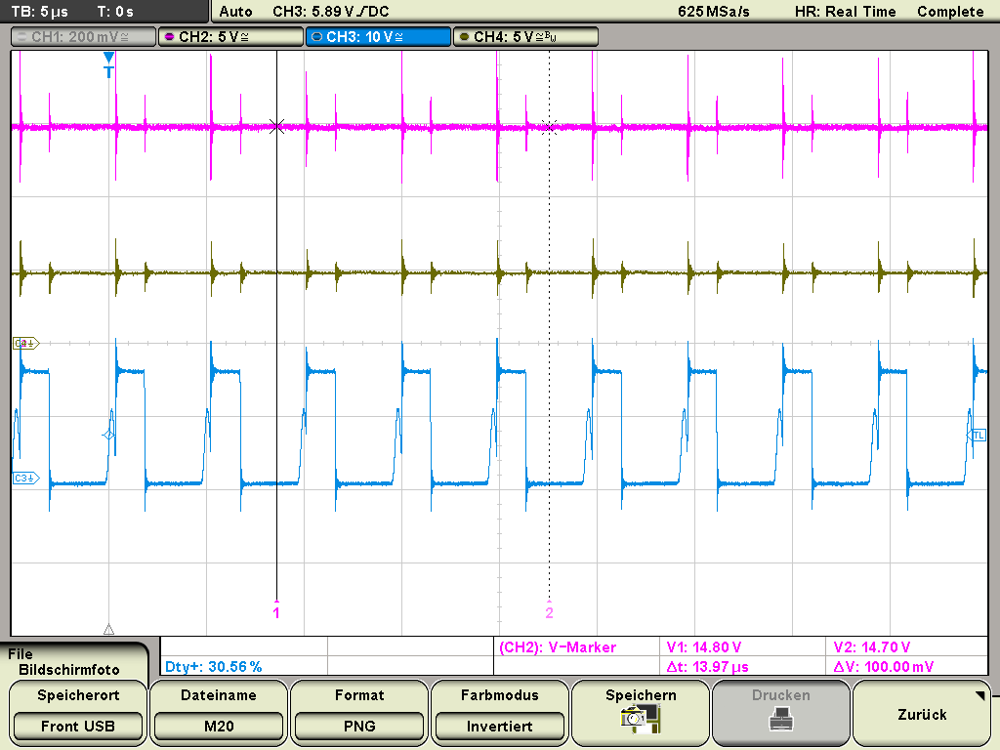{#fig:12dcM20 .align-center}
Wie zuvor erwähnt, weicht der Tastgrad des Messgeräts von den errechneten Werten ab.
Diskussion {#KapitelVI}¶
Folgend werden die Simulations- und Messergebnisse diskutiert.
Wellenformen {#Wellenformen}¶
Die unterschiedlichen Frequenzen der Mess- bzw. Simulationswerte können
zum Teil auf die unterschiedliche Eingangsspannung zurückgeführt werden.
Ausgehend vom Datenblatt des TPS40200 (TEX1{.interpreted-text
role=”cite”}, S.23, Figure 7) ist zu erkennen, dass die Frequenz des
Oszillators und somit auch die PWM-Frequenz steigt, sobald die
Eingangsspannung sinkt. Im Fall der Messung wurde eine geringere
Eingangsspannung als bei der Simulation gemessen. Somit müsste die
Messung eine höhere Oszillatorfrequenz aufweisen als die Simulation, was
auch der Fall ist. Weiterhin könnte der Effekt der schwankenden Frequenz
bei den Messdaten auf die nicht linear verlaufende Eingangsspannung
\(V_{in}\) zurückzuführen sein, da die Oszillatorfrequenz von der
Eingangsspannung abhängt. Zu beachten ist, dass nur ein Ausschnitt von
0,1 ms betrachtet wird. Das die Frequenzen in diesem Bereich sinken,
wird zufällig sein, da sie irgendwann auch wieder steigen muss, um nicht
gegen null zu gehen.
Nach 12_eq_frequenz{.interpreted-text role=”eq”} ergibt sich eine
theoretische Oszillatorfrequenz von 202,63 kHz. Somit ergibt sich für
die TP3 und TP4 der simulierten Daten eine maximale Abweichung von 3,87
%. Für die Messdaten ergibt sich auf dem gleichen Weg eine maximale
Abweichung von 3,07 %.
Die in die Schaltung eingespeisten 10 V Eingangsspannung konnten
messtechnisch nicht nachgewiesen werden. Es wurden stattdessen nur ca.
9,75 V erreicht. Dies macht eine Differenz von 0,25 V. Der
Tastgrad - zwischen der Simulation mit 10 V Eingangsspannung und 4,93
V Ausgangsspannung und der Messung mit 9,8 V Eingangsspannung und
4,88 V Ausgangsspannung - beträgt nach 12_eq_duty{.interpreted-text
role=”eq”} 0,492 beziehungsweise 0,498. Dies ist rein optisch nicht zu
erkennen. Gerundet betragen jedoch beide Tastgrade 50 % mit einer
Differenz von 0,4 % bzw. 1,6 %.
Die Ausgangsspannung weicht zwischen dem errechneten Wert von 4,928 V
nach 12_eq_Vout{.interpreted-text role=”eq”} und dem simulierten Wert
von durchschnittlich 4,9315 V um -0,08 % ab. Zwischen Theorie und
der gemessenen Ausgangsspannung von 4,88 V ergibt dies einen
Unterschied von -0,97 %.
Die Spannungsspitzen, die bei der gemessenen Ausgangsspannung zu sehen
sind, entstehen durch Selbstinduktion der Spule L201. Sie treten auf,
weil in dem Moment, in dem bei dem PWM-Signal bspw. ein Wechsel von 10
V zu 0 V stattfindet (Flanke) eine abrupt Änderung des Stromes in der
Spule erfolgt. Da die Spannung an der Spule vom Grad der Stromänderung
abhängt (basis.2008{.interpreted-text role=”cite”}, S.150, 9.6),
erzeugt dies kurzzeitig eine höhere Ausgangsspannung.
Da sowohl die gemessene Eingangs- und Ausgangsspannung niedriger ist als die theoretischen Werte, könnte ein Grund für die Differenz ein Messfehler des Oszilloskops sein. Des weiteren sind Abweichungen durch Bauteiltoleranzen von Widerständen, Spulen und Kondensatoren mit einzubeziehen. Dennoch kann die Aussage getroffen werden, dass die Simulation durch die Messung bestätigt werden konnte, da keine größeren Abweichungen aufgetreten sind.
Ausgangsspannung bei fester Last¶
Die Abweichung zwischen der theoretisch errechneten Ausgangsspannung
durch 12_eq_Vout{.interpreted-text role=”eq”} und Simulation beträgt
-0,01 %. Im Vergleich zu wellenformen{.interpreted-text role=”ref”}
wurde hier über eine längere Zeit simuliert. Das Ergebnis ist näher an
der Simulation. Dies stellt sehr gut den Vergleich zwischen Theorie und
Simulation dar. Wird die Simulation als Erwartungswert gesetzt, so
weicht die gemessene Ausgangsspannung bei einer Last von 20 \(\Omega\)
um -0,73 % ab. Weiterhin ist zu erkennen, dass die Eingangsspannung im
Bereich von 10 V bis 15 V die Ausgangsspannung nicht beeinflusst. Es
ist ein Schwanken um den Mittelwert zu erkennen. Dieses folgt aber
keinem erkennbaren Muster, daher wird dies auf Rauschen zurückgeführt.
Die Ausgangsspannung kann somit für unterschiedliche Eingangsspannungen
im genannten Bereich als konstant angesehen werden. Bei dem Versatz von
ca. 4 mV wird vermutet, dass dieser durch Bauteil- und
Messungenauigkeit zustande kommt.
Ausgangspannung und -strom bei fester Eingangsspannung und dynamischer Last¶
Die Ausgangsspannung oszilliert in der Simulation bei unterschiedlichem Strom um einen Wert von ca. 4,93 V. In der Messung hingegen fällt die Ausgangsspannung mit steigendem Strom ab. Um so höher der Strom wird, desto schneller fällt die Ausgangsspannung. Hier passen Simulation und Messung nicht zusammen. Weiterhin wird die im Datenblatt angegebene maximale Grenze des Stromes nicht erreicht. Die Spannung bricht vorher bei 2,4 A zusammen. Auch im unteren Lastbereich wird die erwartete Ausgangsspannung nicht erreicht.
Dadurch, dass die Schaltung ihre Strombegrenzung bereits bei 2,4 A
erreicht hat, zeigt sich, dass die im Datenblatt empfohlenen 25 %
nicht ausreichen. Trotzdem ist es gut, diese nicht zu verändern, um zu
gewährleisten, dass die 2,5 A nicht überschritten werden können und es
so nicht zu einer Zerstörung von Bauteilen kommt. Die 2,5 A werden
vermutlich nicht erreicht, weil die Rippel der Ausgangsspannung bei
einem Strom von 2,5 A bis auf 60 mV ansteigen
(TEX1{.interpreted-text role=”cite”}) und dieser Effekt unterschätzt
wird. Bei einem Lastwiderstand von 20 \(\Omega\) lagen die Rippel nur bei
ca. 20 mV. Durch die größeren Rippel steigt kurzfristig der Strom an,
wodurch früher abgeschaltet wird.
Wie angenommen, verringert sich die Ausgangsspannung bei einer niedrigeren Last und dem damit verbundenen höheren Ausgangsstrom. In der Simualtion wird dies nicht berücksichtigt.
Tastgrad¶
Der Verlauf des Tastgrades an TP4 ist für unterschiedliche
Eingangsspannungen zwischen Simulation und Praxis bis auf einen Versatz
sehr ähnlich. Der Verlauf zeigt keine Gerade. Anhand
12_eq_duty{.interpreted-text role=”eq”} ließ sich dies schon
theoretisch erklären. Nach 12_eq_duty{.interpreted-text role=”eq”} und
einer angenommenen Ausgangspannung von 5 V sollte der Tastgrad
zwischen 33,33 % und 50 % liegen. Dies stimmt mit der Simulation und
der Messung überein. Kleinere Abweichungen sind dadurch zu erklären,
dass die tatsächliche Ausgangsspannung von den 5 V abweichen. Der
Tastgrad wurde rechnerisch bestimmt. fig:12dcM10{.interpreted-text
role=”numref”} und fig:12dcM20{.interpreted-text role=”numref”}
spiegeln dieses Verhalten aber wieder. Der Versatz kann durch die
Differenz in den Ausgangsspannungen erklärt werden. Wird
12_eq_duty{.interpreted-text role=”eq”} betrachtet, kann erkannt
werden, dass bei gleicher Eingangsspannung aber geringerer
Ausgangsspannung der Tastgrad abnimmt.
Zusammenfassung {#KapitelVII}¶
Die vorliegende Arbeit stellt eine Parameterstudie eines DC-DC Konverters dar. Grundlage dafür ist der nicht synchrone Abwärtswandler TPS40200 auf dem Evaluationsmodul ASLK PRO. Dafür wurden folgende Punkte untersucht:
die Wellenformen der Eingangs- \(V_{in}\) und Ausgangsspannung \(V_{out}\) sowie die Oszillatorspannung (TP3) und das PWM-Signal (TP4)
die Ausgangsspannung bei fester Last
Ausgangsspannung \(V_{out}\) und -strom \(I_{out}\) bei fester Eingangsspannung und dynamischer Last
Tastgrad (duty cycle)
Diese Punkte wurden durch Simulationen mit dem Programm TINA-TI und Lobormessungen untersucht. Im Anschluss wurden die Ergebnisse dargestellt und miteinander verglichen. Dabei ergaben sich einige Differenzen zwischen der gemessenen und simulierten Oszillatorfrequenz. Weiterhin veränderten sich beide Frequenzen über die Zeit. Zur Abklärung dieser Differenzen sind weitere Messungen zur Oszillatorfrequenz notwendig. Es kann jedoch die Aussage bei den Wellenformen getroffen werden, dass die Simulation durch die Messung bestätigt werden konnte, da keine größeren Abweichungen aufgetreten sind.
Die Ausgangspannungen \(V_{out}\) bei fester Last weichen im Mittelwert nur um 0,04 V voneinander ab. Es wurde hier gezeigt, dass die Simulation durch die Messung bestätigt wurde.
Bei der Betrachtung von \(V_{out}\) und \(I_{out}\) bei dynamischer Last wurde bei der Simulation festgestellt, dass \(I_{out}\) von bis zu 2,5 A der Schaltung entnommen werden kann, ohne, dass es Auswirkungen auf \(V_{out}\) hat. Die Messung hingegen hat gezeigt, dass die Schaltung nur bis 2,4 A liefern kann und \(V_{out}\) ab 0,5 A nicht mehr konstant ist. Mit steigendem \(I_{out}\) sinkt \(V_{out}\).
Die Behandlung der Tastgrade ergab, dass die Simulations- und Messdaten ähnliche Tastgrade ergaben. Sie unterscheiden sich augenscheinlich gar nicht. Ohne dabei die unterschiedlichen Eingangsspannungen zu berücksichtigen. So kann auch hier abschließend festgestellt werden, dass die Simulation durch die Messung bestätigt wurde.
Es kann gesagt werden, dass eine Simulation einer solchen Schaltung zum großen Teil gute bis sehr gute Näherungen bereitstellt. Jedoch ist immer auch Vorsicht geboten, wie bei der Untersuchung der Ausgangsspannung in Abhängigkeit des Ausgangsstroms gezeigt werden konnte. Bei Wiederholungsmessungen müsste herausgearbeitet werden, woraus die niedrigere Eingangsspannung bei den Messungen resultiert, um so ein eindeutigeres Messergebnis zu erlangen.
Literaturverzeichnis {#Kapitel VIII}¶
Experiment_00.bib